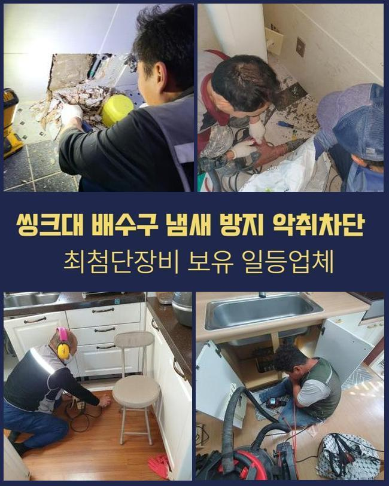
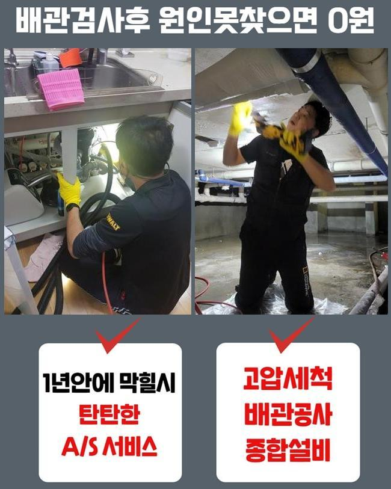
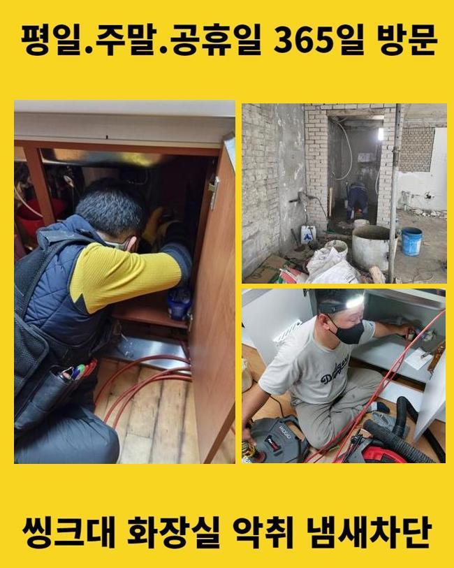
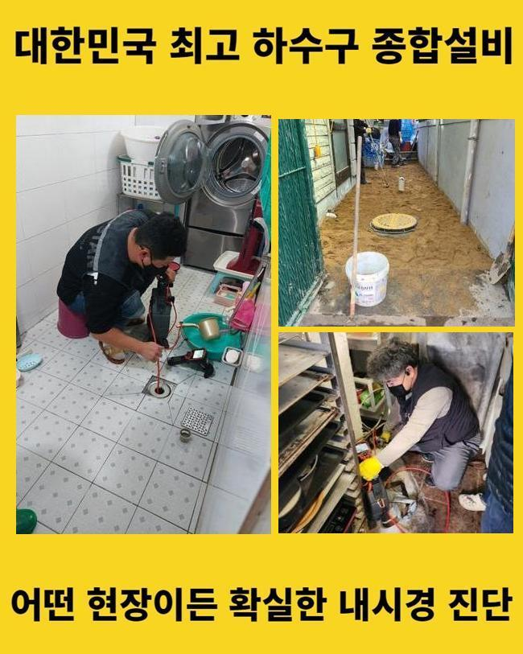
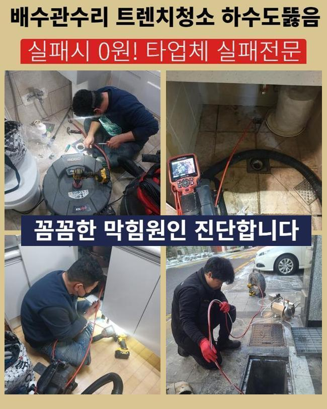
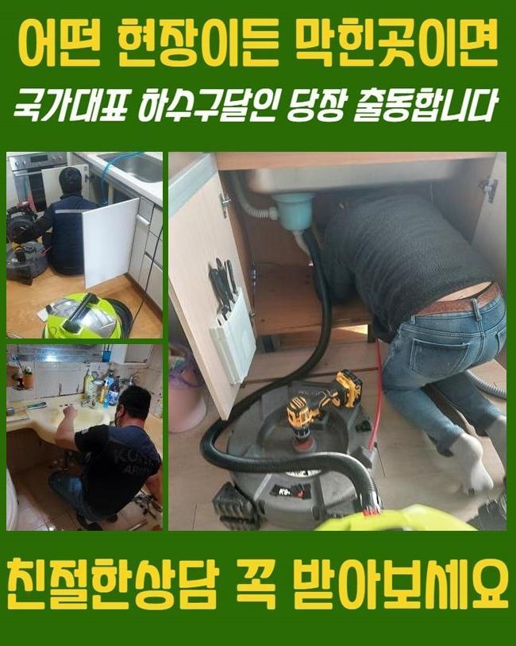
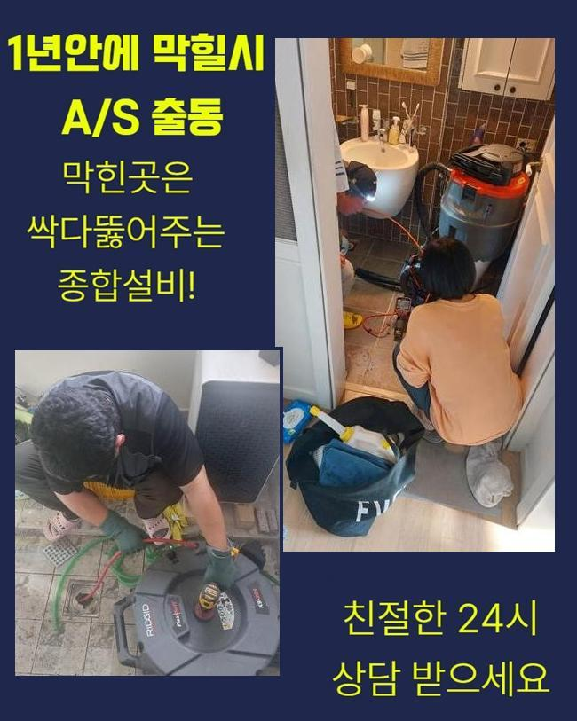

🏠 마포 구수동씽크대막힘 서교동 배수구뚫기 부속수리
용인 싱크대막힘 전문 시공 후기

📋 작업 개요
- 위치: 용인
- 서비스 유형: 싱크대막힘, 하수구막힘, 배관막힘, 역류해결, 뚫는업체, 배관청소, 고압세척, 악취차단
- 작업 일시: 2025. 5. 16. 16:04
- 업체명: 하수구수사대 (010-5615-2118)
🔍 문제 상황
마포 구수동씽크대막힘 서교동 배수구뚫기 부속수리
편안해야할 가정내에서 가끔 일어나는 고장들이 있습니다
그것중 한가지로 하수관막힘을 설명드리고자 해요
하수관이 차단되면 오취가 퍼지는것을 비롯하여 일상의 고충을 증가시키죠
배수불가 사태로 인해 화장실이용도 원활히 못하며 역류상황까지 일어난다면 더욱더 사태는 악화일로로 가게되겠죠
이번 글에선 투룸 세탁실 배관막힘으로 여러 기기를 동원해 처치한 절차를 안내해 드리도록 할게요
의뢰인분은 주방 바로 옆에 설치된 세탁기 배수관에서 배수문제가 발발하였다며 저희팀에 문의를 넣으셨는데요
차량안에 샤프트기기와 석션기기와 같은 것들을 실은 뒤 고객님의 위치로 이동했습니다
도착해 보니 오취가 가득한 상황이었고 이물들이 산재된 모습까지 관측할수 있었답니다
세탁기가동을 통하여 배수하려고 시도했으나 되레 토출되는 사태가 발발하였다고 하소연하셨어요
세탁한 성분만 역류되는게 아니었으며 여러가지 오물들도 나오는 모습이었어요
특정한 주거지역에선 개수대와 다용도실의 배관이 이어진 케이스도 확인할수 있어요
그러한 내용또한 확인하기로 했답니다
막힘문제를 세밀하게 간파하려는 목적으로 손님께 욕실부근이나 또다른 관로에 막힘이 일어났거나 역류증세는 없었는지를 확인해봤어요

🔎 원인 분석
💡 전문가 진단: 정밀 진단 장비를 사용하여 슬러지의 고착 여부를 판명하고 타격/세척 작업을 실시했습니다.
그저께 물이 안내려가 슈퍼마켓에서 구매했던 뚫어뻥과 베이킹소다를 넣어보셨다고 합니다
그걸 토대로 분석해본 결과 주방시설쪽의 하수도에 고장의 사유가 있을거라고 여겨졌어요
저희측이 내방드린 현장의 트러블을 처치하려 사유를 찾아내기로 하였답니다
내시경cctv를 활용하여 파이프 내측을 검정하기로 결단하였어요
배수공이 차단되어 내시경마저 안들어갈땐 방수청소기로 관로의 침전물을 제거하게 되죠
해당 공정으로 작업시간을 줄여나갈 수 있죠
세척공정 중에 상당량의 슬러지와 미세물질이 배출되었는데요
단 이것만으로는 본질적인 정체이유가 어떤건지 밝히지는 못했어요
간단히 흡입기기로 처치못하는 것들이 많았기 때문에 즉시 배관내시경을 투입시켜 물막힘이 생겨난 관로를 관측하기로 했습니다
상태를 자세하게 조사하니 해변에 존재하는 모래알갱이들이었어요
세탁기에서 나온 상황일 가망이 컸죠
의뢰인분에게 휴가일정이 근래에 있으셨나 여쭤봤더니 서해쪽 바닷가에 가셨다고 말해주셨어요
우선 눈에보이는 이물질을 제거하였고 더욱 전면적으로 세척작업을 속행하기로 했죠
그러면서 하단부위까지 처치가능한 장비들을 사용하기로 했습니다

🔧 작업 과정
내시경cctv를 쓰는건 막힘의 사유를 분명히 파악하고 정체를 처리하기 위함입니다
석션기기로 세척을 끝내고 가느스름한 호스줄에 붙어있는 내시경cctv를 이용하여 하수구 하단부를 조사해 보았어요
심층부까지 진단해보았고 근본적인 트러블의 사유를 발견해낼수 있던거죠
이처럼 배관에서 일어난 고장은 여러가지 변인들에 기인하여 발생될수가 있겠고 해결책이 간단한것도 아니라고 말씀드려요
그렇기때문에 전문적인 기기들을 토대로 수선을 이행해야 순탄하게 끝맺음할수 있는거랍니다
혹여 대강 정황을 정리하려든다면 더욱더 막힘이 증가할수 있단 것을 염두에 두시길 바라요
관로 안쪽을 배관내시경으로 관찰해 보았어요
관로의 실측값은 우리의 예상보다 크고 형태도 복잡해서 즉각적으로 파악하기에는 한계점이 있답니다
그러한 정황에선 길고 가는 내시경카메라가 확실한 기능을 해낼수 있어요
배관내시경을 이용해서 하수관 안을 천천히 들여다보니 불규칙한 석회성분과 흙성분들이 혼재되어 있었어요
이러한 고형물들은 배수되기 어렵고 관로에 흡착하여 경화될수가 있어요
미세한 잔재들은 배수관을 통해 쉬이 바깥으로 배출되겠으나 동시에 모래알들이 관로로 투입된다면 해당 현장처럼 막힘이 생길수 있는거죠
게다가 그상황이 계속된다면 배수관에 단단한 물질층이 생겨날수도 있는거고요
이물의 크기와 양을 기준으로 이용하는 도구가 다릅니다
일례로 양말같은 커다란 부피의 물체가 막혀있다면 쇠갈고리 등을 투입하여 끌어낸 다음 석션도구로 관로 안을 청소해야 됩니다
혹여 이렇게 아니하고 곧바로 분쇄공정에 들어가면 배관안이 더욱더 혼잡해질수가 있는거죠
슬러지들이 더미형태로 다량이 존재하고 있다면 인위적으로 파쇄하는 업무를 시행하곤 하죠
이 현장은 모래알들과 뒤엉켜있어서 그걸 플렉스샤프트를 이용해서 분쇄시키고 뚫음을 시행하였죠
해당 현장에선 관로안을 채웠던 노폐물들을 없앤다음에 내시경기기로 다시금 점검을 하였답니다
그후 잔류하는건 샤프트기기로 정결히 정비하고 곧바로 물이 잘 내려가는지 확인하였는데요
다량의 물도 시원하게 소멸되는걸 인지할수 있었네요
시공과정에서 배출된 폐기물들을 전반적으로 정리한뒤 치우는것으로 시공을 마무리하였죠


✅ 작업 완료
위의 정체문제를 사전적으로 막기 위해서는 정기적으로 하수구 점검했고 클리닝해야 돼요
싱크대쪽 배수관에서는 음식물이 물막힘을 야기하고 역류까지 일으키는 경우가 허다하죠
해당 상황에 직면하면 지체하지말고 즉각적으로 기술자에게 의뢰하시는 편이 바람직합니다
자체적으로 처리할수있는 방안은 제한이 뒤따르고 막힘상황이 한층 나빠지는 케이스도 빈번하기 때문이죠
전문가의 분쇄작업이나 고압세척은 간단하게 삶을 정상화시켜 주는것만이 아닌 청결성을 지속시키는데도 중요하답니다
또 그문제가 계속적으로 방치된다면 인근 거주자들에게도 곤란한 상황을 야기할수 있다는것을 기억하셔야 해요




⚠️ 주방 싱크대 배관 막힘 예방 수칙
- ✅ 기름기가 묻은 식기나 프라이팬은 설거지 전 키친타올로 반드시 기름때를 닦아내세요.
- ✅ 주기적으로 싱크대 개수대에 뜨거운 물을 가득 받아 한 번에 내려 배관 내부 기름을 씻어내세요.
- ✅ 배수구 거름망을 미세한 필터로 사용하시고 음식물 찌꺼기가 틈으로 새어 들지 않게 관리하세요.
- ✅ 베이킹소다와 식초를 뜨거운 물과 함께 일주일에 한 번씩 부어주면 배관 살균과 막힘 예방에 좋습니다.
💡 핵심 정리
- 확실한 장비 작업(내시경 점검 및 샤프트 스케일링)으로 원인을 뿌리 뽑습니다.
- 작업 후 1년 이내에 동일한 부위 재발 시 100% 무상 A/S 서비스를 보장합니다.
- 서울 · 경기 · 인천 전 지역에 24시간 언제든 긴급 출동할 수 있도록 항시 대기 중입니다.
❓ 자주 묻는 질문 (FAQ)
🚨 용인 싱크대막힘 문제로 고민이신가요?
정확한 원인 진단과 확실한 시공으로 재발 없는 해결을 약속드립니다.
24시간 긴급 출동 | 서울 · 경기 · 인천 전지역 | 1년 내 재발 시 무상 A/S